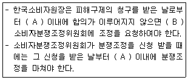
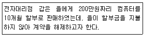
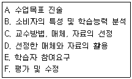
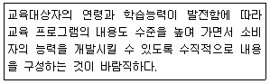
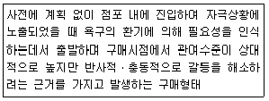
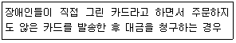

소비자전문상담사-2급 (2009-07-26 기출문제)
1과목: 소비자상담 및 피해구제
1. 구매 후 상담에 대한 설명으로 옳은 것은?
- 구매 후 소비자상담의 역할은 기업에서만 행한다.
- 일반적으로 불만처리, 피해구제, 기타 상담으로 구분할 수 있다.
- 상품선택방법 상담이 대표적인 예이다.
- 구매 전 상담에 비해 상담건수가 적은 편이다.
(정답률: 알수없음)

2. 소비자만족의 구성요인 중 서비스요인에 해당되는 것은?
- 판매원의 태도와 언행
- 제품의 품질, 기능, 성능
- 기업의 사회공헌 활동
- 환경보호 활동
(정답률: 알수없음)
3. 구매 시 소비자상담원의 역할을 소비자측면과 기업측면의 역할로 구분할 때 다음 중 소비자측면에서의 역할은?
- 소비자 의사결정 지원
- 이윤 창출 기여
- 기존 소비자 유지
- 새로운 소비자 확보
(정답률: 알수없음)
4. 품목별 소비자분쟁해결기준상 보일러의 품목별 품질보증기간 및 부품보유기간이 올바르게 짝지어진 것은?
- 1년-4년
- 1년-7년
- 2년-7년
- 3년-5년
(정답률: 알수없음)
5. 소비자 행동스타일별 소비자상담전략으로 가장 적합한 것은?
- 단호한 스타일-적극적으로 대화를 주도하고 고객을 최종결정으로 리드한다.
- 호기심 많은 스타일-고객의 질문에 간결하고 사실적인 것만 대답한다.
- 합리적인 스타일-고객의 욕구에 관심을 표명하고 고객의 감정적인 측면에 호소한다.
- 표현적인 스타일-고객에게 마음에 드는 점을 직접 말하게 하고 친숙함을 표시한다.
(정답률: 알수없음)
6. 행정기관에서 소비자상담을 제공해야 하는 필요성을 한마디로 요약하면 사적자치의 한계 때문이다. 현대 사회에서 사적자치의 원칙이 지켜지기 어려운 이유와 가장 거리가 먼 것은?
- 인터넷이 발달된 현대에서 소비자는 상품에 대한 지식과 정보가 많다.
- 대량생산에서 결함상품이 발생하면 대량의 소비자 피해가 생길 우려가 있다.
- 소비자피해를 재판으로 해결하려면 시간, 비용이 많이 든다.
- 개인 소비자는 사업자와 충분한 교섭 능력을 갖기 어렵다.
(정답률: 알수없음)
7. 소비자가 적절한 보상을 받을 수만 있다면 가장 바람직한 피해구제 방법으로서의 소비자상담은?
- 사업자에 의한 소비자상담
- 소비자단체에 의한 소비자상담
- 행정기관에 의한 소비자상담
- 한국소비자원에 의한 소비자상담
(정답률: 알수없음)
8. 구매 전 소비자상담의 내용으로 적합하지 않은 것은?
- 대체 안의 존재와 특성에 관한 정보
- 가격과 판매점 등의 시장정보
- 사용방법에 관한 정보
- 계약서 작성과 지불방법의 결정
(정답률: 알수없음)
9. 소비자상담의 필요성이 계속 증가하는 이유와 가장 거리가 먼 것은?
- 소비자의 예측이 어려운 새로운 형태의 상품, 서비스의 증가
- 사업자의 새로운 부담판매행위 증가
- 집약적 소량소비로 인한 소비자불만 감소
- 새로운 유통, 판매방법의 변화로 소비자의 대처 능력 미흡
(정답률: 알수없음)
10. 다음 중 품목별 소비자분쟁해결기준상 품질보증을 받을 수 있는 자동차는?
- 7만km 주행 후 엔진을 새로 교환하여 새로 2만km 주행한 자동차
- 구입 1년 내에 엔진결함으로 신차로 교환하여 5만km 주행한 자동차
- 구입한지 4년 되었으며 주행거리가 3만km인 자동차
- 구입한지 1년 되었으며 주행거리가 7만km인 자동차
(정답률: 알수없음)
11. 행정기관의 소비자상담 역할과 가장 거리가 먼 것은?
- 소비자 권리 실현
- 생애 학습으로 연결되는 소비자 교육 실시
- 소비생활 전반에 관련된 다양한 정보 제공
- 불만 상품의 직접 교환 및 환불
(정답률: 알수없음)
12. 품목별 소비자분쟁해결기준상 피해유형별 보상기준이 틀린 것은?
- 사업자의 귀책사유로 인한 산후조리원 입소 전 계약해제-계약금 환급 및 계약금의 10% 배상
- 하자 없이 촬영한 필름인화 의뢰시 현상과정에서의 하자로 정상적인 사진인화 불가-사진 촬영시 소요된 비용 및 손해배상
- 사용자가 수리 의뢰한 스포츠용품(품질보증기간 경과 후)을 사업자가 분실-정액감가상각한 금액 환급
- 전화요금 이중청구 또는 착오로 인한 이중납부-환급 또는 차액차감정산
(정답률: 알수없음)
13. 일반적 소비자분쟁해결기준상 품질보증기간 및 부품보유기간의 기준에 관한 설명으로 틀린 것은?
- 품질보증기간 및 부품보유기간은 당해 사업자가 품질보증서에 표시한 기간으로 한다.
- 품질보증기간은 소비자가 물품을 구입하거나 제공받은 다음 날부터 기산한다.
- 사업자가 품질보증기간 및 부품보유기간을 표시하지 않은 경우에는 품목별 보상기준에 의한다.
- 판매일자를 확인하기 곤란한 경우에는 해당 물품의 제조일이나 수입통관일부터 3월이 지난 날부터 품질보증기간을 기산한다.
(정답률: 알수없음)
14. 소비자의 욕구를 효율적으로 파악하고 해결하기 위한 상담 기법이 아닌 것은?
- 소비자의 욕구를 인식한 후에 소비자와 상담목표를 논의한다.
- 성취 가능한 합리적인 상담목표를 세워야 하며, 이에 대해 소비자와의 합의가 이루어져야 한다.
- 전문적 지식과 확신을 바탕으로 상담목표를 결정하고, 이를 소비자에게 제시해 준다.
- 상담목표를 상기시키고, 긍정적 동기를 회복하도록 돕는다.
(정답률: 알수없음)
15. 다음 중 고객과의 의사소통에서 메시지 전달에 가장 큰 영향을 미치는 비언어적 의사소통기술은?
- 사용하는 단어
- 언어의 높낮이와 속도
- 얼굴표정 및 몸짓
- 상대와의 거리
(정답률: 알수없음)
16. 소비자 상담을 원하는 소비자의 일반적인 욕구와 가장 거리가 먼 것은?
- 관심과 정성을 원한다.
- 적시에 서비스를 제공받기 원한다.
- 자신의 문제를 혼자 해결하기 원한다.
- 유능하고 책임 있는 일처리를 기대한다.
(정답률: 알수없음)
17. 인터넷상담에 임하는 소비자상담사의 자세로 틀린 것은?
- 답신을 할 때는 반드시 소속, 성명 등의 신원을 밝힘으로서 신뢰감을 증진시킨다.
- 상담을 신청한 소비자의 신원을 밝히도록 하여, 지속적인 상담을 유지한다.
- 답변은 소비자가 이해하기 쉽도록 자세하고 명확하게 한다.
- 인터넷상담이 바로 안 될 경우를 대비하여, 전화번호, 팩스번호 등을 함께 제시한다.
(정답률: 알수없음)
18. 다음 중 소비자상담의 내용과 가장 거리가 먼 것은?
- 상품, 서비스 구매에 필요한 정보 제공
- 상품제조에 필요한 원자재 시장동향 분석 및 정보 제공
- 상품, 서비스 구매 후 불만사항에 관한 상담
- 소비자 피해 및 그 보상에 관한 내용
(정답률: 알수없음)
19. 인터넷상담의 형태에 관한 설명으로 옳은 것은?
- 데이터베이스 상담-통신을 이용하여 편지를 주고받으며 진행되는 상담이다.
- 이메일 상담-상담사와 소비자가 대화방이라는 가상의 상담실에서 만나 대화를 주고받는 상담이다.
- 채팅 상담-인터넷 공간에 소비자에게 유익한 자료를 올려 소비자들이 필요로 할 때 언제든지 조회할 수 있도록 하는 상담이다.
- 웹 쉐어링 상담-인터넷상에서 소비자와 상담사의 두 컴퓨터 사이에서 동시에 동일한 인터넷공간 사용이 가능하도록 하는 상담이다.
(정답률: 알수없음)
20. 소비자상담사가 갖추어야 할 능력을 인간적 능력과 전문적 능력으로 구분할 때 전문적 능력에 해당하는 것은?
- 이해력
- 교섭능력
- 원만한 성품
- 객관적 판단능력
(정답률: 알수없음)
21. 효과적인 의사소통을 위한 상담자의 태도와 가장 거리가 먼 것은?
- 언어에 나타난 것 이외의 내용도 이해한다.
- 적극적인 경청자세를 위하며 열심히 듣는다.
- 어려운 주제를 피하고 쉽고 가벼운 주제만 찾는다.
- 감정적인 말들을 판단하고 그것에 얽매이지 않는다.
(정답률: 알수없음)
22. 소비자상담사의 용모와 복장으로 가장 적합하지 않은 것은?
- 보편타당한 것으로 자신의 개성을 나타낸다.
- 업무관리에 효율적인 용모와 복장이 되도록 한다.
- 자신의 인격과 근무하는 기관의 이미지를 고려한다.
- 유행에 뒤지지 않도록 복장에 세심한 신경을 쓴다.
(정답률: 알수없음)
23. 고객만족의 전반적인 수준을 하나의 수치로 표현하여 서비스 개선 여부의 모니터와 직원을 동기화 시키는데 매우 유용한 것은?
- 고객우선순위
- 성과프로필
- 고객만족지수
- 성과매트릭스
(정답률: 알수없음)
24. 기업의 소비자 상담기능과 가장 거리가 먼 것은?
- 소비자 불만처리
- 소비자 정책수립
- 소비자의 욕구, 선호에 관한 정보 수집
- 마케팅 활동
(정답률: 알수없음)
25. 다음 중 콜센터 상담에 관한 설명으로 틀린 것은?
- 인바운드 상담을 통하여 고객ㅇ게 금정, 시간, 심리적 이익을 제곱한다.
- 기업의 소비자 상담실은 일종의 인바운두 텔레마케팅이다.
- 아웃바운드 텔레마케팅은 기존 고객이나 가망 고객에게 발신하는 방법이다.
- 전화 상담 중 의문점이 있어도 일단은 고객의 말을 들어주고 상담 후 다시 확인해 본다.
(정답률: 알수없음)
2과목: 소비자 관련법
26. 표시ㆍ광고의 공정화에 관한 법률상 표시ㆍ광고내용의 실증에 관한 설명으로 틀린 것은?
- 공정거래위원회는 실증이 필요하다고 인정되는 경우에는 그 내용을 구체적으로 명시하여 당해 사업자 등에게 관련 자료의 제출을 요청할 수 있다.
- 실증자료의 제출을 요청받은 사업자 등은 요청받은 날부터 30일 이내에 그 실증자료를 공정거래위원회에 제출하여야 하며, 이 기간은 연장할 수 없다.
- 고정거래위원회는 상품 등에 관하여 소비자가 잘못 하는 것을 방지하거나 공정한 거래질서를 유지하기 위하여 필요하다고 인정되는 경우에는 사업자 등이 제출한 실증자료를 비치하여 이를 일반이 열람할 수 있게 할 수 있다.
- 공정거래위원회는 사업자 등이 실증자료의 제출을 요구받고도 제출기간 내에 이를 제출하지 아니한 채 계속하여 표시ㆍ광고를 하는 때에는 실증자료를 제출할 때까지 그 표시ㆍ광고행위의 중지를 명할 수 있다.
(정답률: 알수없음)
27. 방문판매 등에 관한 법률상 방문판매업자 또는 전화권유 판매업자의 의무가 아닌 것은?
- 신고의무
- 계약체결 전 정보제공의무
- 계약서 교부의무
- 고객명부 비치의무
(정답률: 알수없음)
28. 방문판매 등에 관한 법률상 방문판매자의 무조건적인 금지행위가 아닌 것은?
- 본인의 허락을 받지 않고서 소비자에 관한 정보를 제3자에게 제공하는 행위
- 계약의 해제를 방해할 목적으로 소비자에게 위력을 가하는 행위
- 소비자에게 계약체결 전 고지사항에 관해 허위사실을 알리는 행위
- 청약의 철회를 방해할 목적으로 주소 등을 변경하는 행위
(정답률: 알수없음)
29. 약관의 규제에 관한 법률상 불공정한 약관조항을 계약의 내용으로 사용하는 사업자에 대하여 당해 약관조항의 삭제ㆍ수정 등 시정에 필요한 조치를 권고할 수 있는 기관은?
- 공정거래위원회
- 기획재정부
- 금융감독원
- 한국소비자원
(정답률: 알수없음)
30. 표시ㆍ광고의 공정화에 관한 법령상 부당한 광고ㆍ표시유형과 그 예를 잘못 연결한 것은?
- 비방적인 표시ㆍ광고-다른 사업자의 상품에 관하여 객관적인 근거가 있는 내용으로 표시ㆍ광고하여 비방하는 것
- 허위ㆍ과장의 표시ㆍ광고-사실과 다르게 표시ㆍ광고하는 것
- 기만적인 표시ㆍ광고-사실을 은폐하는 방법으로 표시ㆍ광고하는 것
- 부당하게 비교하는 표시ㆍ광고-객관적인 근거 없이 자기의 상품을 다른 사업자의 상품과 비교하여 우량 또는 유리하다고 표시ㆍ광고하는 것
(정답률: 알수없음)
31. 약관의 규제에 관한 법률상 약관의 해석에 관한 설명으로 틀린 것은?
- 신의성실의 원칙에 따라 공정하게 해석되어야 한다.
- 고객에 따라 다르게 해석되어서는 아니된다.
- 개별약정은 약관보다 우선적으로 해석되어서는 아니된다.
- 약관의 뜻이 명확하지 않으면 고객에게 유리하게 해석하여야 한다.
(정답률: 알수없음)
32. 소비자기본법상 소비자단체의 업무에 해당하지 않는 것은?
- 지방자치단체의 소비자단체 강제설립 권고
- 국가 및 지방자치단체의 소비자의 권익과 관련된 시책에 대한 건의
- 물품등의 규격ㆍ품질ㆍ안정성ㆍ환경성에 관한 시험 검사 및 가격 등을 포함한 거래조건이나 거래방법에 관한 조사ㆍ분석
- 소비자문제에 관한 조사ㆍ연구
(정답률: 알수없음)
33. 소비자기본법상 중앙행정기관의 장이 취할 수 있는 결함 상품의 수거ㆍ파기와 관련한 설명으로 틀린 것은?
- 유해물품을 제공한 사업자에 대하여 당해 물품 등의 수거ㆍ파기를 권고할 수 있다.
- 수거ㆍ파기의 권고를 받은 사업자가 그 권고를 수락할 경우에는 소관 중앙행정기관에 대한 통지를 생략할 수 있다.
- 수거ㆍ파기의 권고를 받은 사업자가 정당한 사유 없이 그 권고를 따르지 아니하는 때에는 사업자가 권고를 받은 사실을 공표할 수 있다.
- 소비자의 생명ㆍ신체 또는 재산에 긴급하고 현저한 위해를 끼치거나 끼칠 우려가 있다고 인정되는 경우로서 불가피한 경우에는 원칙적으로 대통령령이 정한 절차를 생략하고 제조금지를 명할 수 있다.
(정답률: 알수없음)
34. 민법상 청약에 대해 상대방이 조건을 붙이거나 변경을 가해서 승낙한 경우의 효과로 옳은 것은?
- 청약을 거절한 것으로 본다.
- 아무런 효과도 생기지 않는다.
- 청약을 승낙하고 동시에 다른 청약을 한 것으로 본다.
- 청약을 거절하고 동시에 새로 청약을 한 것으로 본다.
(정답률: 알수없음)
35. 민법상 행위능력에 관한 설명으로 틀린 것은?
- 행위능력은 법률행위의 유효요건이다.
- 낭비자는 행위능력이 제한될 수 있다.
- 행위능력은 무능력자에 해당하지 않을 만한 자격을 말한다
- 술에 잔뜩 취한 자의 행위는 행위능력이 없음을 이유로 무효을 주장할 수 있다.
(정답률: 알수없음)
36. 전자상거래등에서의 소비자보호에 관한 법률의 규제내용으로 틀린 것은?
- 통신판매업자는 소비자로부터 재화 등의 거래에 관한 청약을 받은 경우 청약의 의사표시를 수신 확인 및 판매 가능 여부에 관한 정보를 신속하게 통지하여야 한다.
- 통신판매업자는 계약 체결 전에 소비자가 청약의 내용을 확인하고, 정정 또는 취소할 수 있도록 적절한 절차를 갖추어야 한다.
- 통신판매업자는 청약을 받은 재화 등을 공급하기 곤란함을 알았을 때에는 그 사유를 소비자에게 지체없이 알려야 하며, 선불식 통신판매의 경우에는 그 대금을 지급받은 날부터 2영업일 이내에 환급하거나 환급에 필요한 조치를 하여야 한다.
- 통신판매업자는 소비자가 재화 등의 공급 절차 및 진행상황을 확인할 수 있도록 적절할 조치를 하여야 한다. 이 경우 공정거래위원회는 그 조치에 필요한 사항을 정하여 고시할 수 있다.
(정답률: 알수없음)
37. 소비자기본법상 국가는 소비자의 생명ㆍ신체 또는 재산상의 위해를 방지하기 위하여 사업자가 지켜야 할 사항의 기준을 정하여야 한다. 다음 중 해당 사항이 아닌 것은?
- 물품 등의 성분ㆍ함량ㆍ구조 등 안전에 관한 중요한 사항
- 물품 등을 사용할 때의 지시사항이나 경고 등 표시할 내용과 방법
- 물품 및 용역의 공정거래와 관련된 주의사항
- 기타 위해를 방지하기 위하여 필요하다고 인정되는 사항
(정답률: 알수없음)
38. 전자상거래 등에서의 소비자보호에 관한 법령상 소비자에 관한 정보가 도용되어 재산상의 손해가 발생한 경우 소비자와 거래관계에 있는 사업자가 취하여야 할 조치가 아닌 것은?
- 도용자의 색출 및 손해배상청구
- 도용에 의한 피해의 회복
- 도용에 의하여 변조된 소비자에 관한 정보의 원상회복
- 소비자 본인이 요청하는 경우 도용여부의 확인 및 당해 소비자에 대한 관련거래 기록의 제공
(정답률: 알수없음)
39. 소비자기본법상 소비자의 피해구제에 관련된 다음 설명의 ()안에 들어갈 알맞은 것은?

- A : 60일, B : 30일 이내에
- A : 30일, B : 지체없이
- A : 10일, B : 60일 이내에
- A : 10일, B : 지체없이
(정답률: 알수없음)
40. 표시ㆍ광고의 공정화에 관한 법률상 손해배상에 대한 설명으로 틀린 것은?
- 사업자에게 무과실 손해배상책임이 인정된다.
- 동법상 피해자의 손해배상청구권은 3년의 시효기간이 경과한 때는 소멸된다.
- 피해자는 공정거래위원회의 시정조치와 관계없이 동법상의 손해배상청구권을 재판상 주장할 수 있다.
- 피해자는 공정거래위원회의 시정조치와 관계없이 민법 제70조의 규정에 의한 손해배상청구의 소를 제기할 수 있다.
(정답률: 알수없음)
41. 약관의 규제에 관한 법률상 약관의 심사청구를 할 수 있는 주체와 심사할 수 있는 기관이 바르게 짝지어진 것은?
- 소비자기본법에 의하여 등록된 소비자단체-공정거래 위원회
- 미등록 소비단체-한국소비자원
- 사업자단체-한국소비자원
- 법률상 이익이 없는 자-공정거래위원회
(정답률: 알수없음)
42. 민법상 시효로 인하여 소멸될 수 있는 권리는?
- 담보물권
- 이자채권
- 소유권
- 점유권
(정답률: 알수없음)
43. 소비자와 사업자 간에 발생한 사적분쟁과 관련한 적절한 소비자피해 관련법이 존재하지 않을 경우 어떤 법을 적용하게 되는가?
- 헌법
- 민법
- 형사법
- 행정법
(정답률: 알수없음)
44. 할부거래에 관한 법률상 다름 사례에서 갑이 을에 대하여 계약을 해제하기 전에 이행할 것을 서면으로 최고하여야 하는 기간은?

- 7일 이상
- 10일 이상
- 14일 이상
- 20일 이상
(정답률: 알수없음)
45. 할구거래에 관한 법률의 적용에 관한 설명으로 틀린 것은?
- 이 법의 적용을 받는 것은 동산과 용역에 한한다.
- 이 법은 보험업법에 의한 보험에 대하여는 적용될 수 있다.
- 이 법은 고등학생이 독서실 이용권을 구입하는 경우에도 적용될 수 있다.
- 이 법은 매수인이 상행위를 목적으로 할부계약을 체결하는 경우에는 적용되지 아니한다.
(정답률: 알수없음)
46. 민법상 매도인(사업자)은 매수인(소비자)에게 완전한 물건을 인도하여야 하고 하자발생시 손해배상의무 등을 부담하게 되는데, 이를 무엇이라 하는가?
- 채권자대위권
- 소비자의 대리권
- 계약해지권
- 하자담보책임
(정답률: 알수없음)
47. 방문판매 등에 관한 법률에서 사용하는 용어의 정의로 틀린 것은?
- 다단계판매자-다단계판매를 업으로 하기 위하여 다단계판매조직을 개설 또는 관리ㆍ운영하는 자와 다단계판매조직에 판매원으로 가입한 자
- 후원수당-판매수당ㆍ알선수수료ㆍ장려금ㆍ후원금 등 그 명칭 및 지급형태를 불문하고, 소정의 사항과 관련하여 다단계판매업자가 다단계판매원에게 지급하는 경제적 이익
- 계속거래-법령이 정하는 일정기간 이상 계속하여 재화 등을 공급하는 계약으로서 중도에 해지할 경우 대금환급의 제한 또는 위약금에 관한 약정이 있는 거래
- 방문판매-사업자가 소득기회를 알선ㆍ제공하는 방법으로 거래 상대방을 유인하여 재화 등을 구입하게 하는 거래
(정답률: 알수없음)
48. 제조물책임법상 용어의 정의로 틀린 것은?
- 제조물-다른 동산이나 부동산의 일부를 구성하는 경우를 포함한 제조 또는 가공된 동산
- 주의상의 결함-제조물에 대한 제조ㆍ가공상의 주의의무의 이행여부에 불구하고 제조물이 원래 의도한 설계와 다르게 제조ㆍ가공됨으로써 안전하지 못하게 된 경우
- 설계상의 결함-제조업자가 합리적인 대체설계를 채용하였더라면 피해나 위험을 줄이거나 피할 수 있었음에도 대체설계를 채용하지 아니하며 당해 제조물이 안전하지 못하게 된 경우
- 표시상의 결함-제조업자가 합리적인 설명ㆍ지시ㆍ경고 기타의 표시를 하였더라면 당해 제조물에 의하여 발생될 수 있는 피해나 위험을 줄이거나 피할 수 있었음에도 이를 하지 아니한 경우
(정답률: 알수없음)
49. 할부거래에 관한 법률상 매수인의 권리에 대한 설명으로 옳은 것은?
- 낱개로 밀봉된 비디오는 2회 이하 관람한 경우에 한하여 청약을 철회할 수 있다.
- 기한이 도래하기 전에 매수인이 할부금을 일시에 지급할 경우에는 나머지 할부금에 할부수수료를 합산한 금액을 지급하여야 한다.
- 매수인이 신용제공자에게 지급을 거절할 수 있는 금액은 할부금의 지급을 거절한 당시에 매수인이 신용제공자 에게 지급하지 아니한 나머지 할부금으로 한다.
- 신용카드를 이용한 할부계약에서 매수인의 항변권이 성립되는 경우 할부가격이 10만원 이상인 경우에 한하여 신용제공자에게 지급거절의사 통지 없이 지급을 거절할 수 있다.
(정답률: 알수없음)
50. 전자상거래에서 乙이 본인 甲을 사칭하거나 그의 ID나 패스워드 등을 도용하여 丙과 거래한 경우 그 법적 효과에 대한 설명으로 옳은 것은?
- 丙이 그 사실을 알지 못하고 모르는데 과실이 없으면 그 거래행위는 甲에게 효력이 있다.
- 丙은 사기를 이유로 乙과의 거래행위를 취소할 수 없다.
- 乙은 착오를 이유로 丙과의 거래행위를 취소할 수 있다.
- 乙의 행위는 무권대리행위로서 甲의 추인이 없으면 甲에게 효력이 없다.
(정답률: 알수없음)
3과목: 소비자 교육 및 정보제공
51. 소비자교육의 목적에 관한 설명으로 틀린 것은?
- 소비자가 요구와 욕망을 구분하여 자원을 효율적으로 배분하게 한다.
- 소비자의 역할을 제대로 수행하고 권리와 책임을 다하도록 한다.
- 다양한 생활환경의 변화에 능동적으로 대처하게 한다.
- 개인적 효율성과 합리성을 지향하는 것이며, 시회적 효율성 및 합리성과는 무관하다.
(정답률: 알수없음)
52. 성인에 대한 소비자교육 프로그램을 작성하고자 할 때 고려하여야 하는 방향과 가장 거리가 먼 것은?
- 소비자교육의 기본 영역과 관계된 내용 중시
- 사회적ㆍ문화적 변화와 관계된 내용 중시
- 연령, 지역, 경제적 상태에 적합한 내용 중시
- 소비자교육 주최 기관의 성격에 부합하는 내용 중시
(정답률: 알수없음)
53. 전문가의 직관이나 판단에 의존하는 소비자교육 요구분석의 한 방법으로서, 한 문제에 대한 전문가들의 의견을 설문조사하여 모아 요약 정리한 후 다시 전문가들에게 회송ㆍ합의를 도출 해내는 방법은?
- 조사연구
- 사례조사
- 능력분석법
- 델파이법
(정답률: 알수없음)
54. 사이버소비자운동의 한 유형으로 인터넷에서 제품이나 서비스에 불만을 느낀 소비자들이 비판활동이나 불매운동을 하는 인터넷 사이트를 무엇이라고 하는가?
- 가격비교사이트
- 품질비교사이트
- 소비경험교환사이트
- 안티사이트
(정답률: 알수없음)
55. 고객관계관리(CRM)에 가망고객 추출, 가망상품 추출, 이탈고객 점수화/감지, 이탈영업직원 감지, 시장바구니 분석, 악구전 행동의 추적을 위해서 사용하는 데이터 분석 기법은?
- Data Mining
- OLAP
- CTI
- DB 장비
(정답률: 알수없음)
56. 소비자 권리와 이에 대한 기업의 소비자 책임이 가장 올바르게 짝지어진 것은?
- 알권리와 사용설명서의 알기 쉬운 표현
- 선택할 권리와 에프터서비스
- 의견을 반영할 권리와 제조물책임 주행
- 의사반영의 권리와 에너지 효율표시
(정답률: 알수없음)
57. 다음 중 아동소비자 특성과 가장 거리가 먼 것은?
- 자유재량 소비액의 증가
- 소비욕망 절제력의 부족
- 대중매체에의 과다한 노출
- 가계구매에 대한 영향력의 미비
(정답률: 알수없음)
58. 다음 중 소비자 정보가 지니는 특성이 아닌 것은?
- 비소비성
- 공공재적 특성
- 귀속성
- 비대칭성
(정답률: 알수없음)
59. 개별적으로 분산되어 있는 소비자정보를 통합하여 소비자로 하여금 효율적으로 정보를 이용할 수 있도록 하기 위해 가장 우선적으로 필요한 것은?
- 소비자정보 검색 설비의 구축
- 소비자정보 검색 프로그램의 구축
- 소비자정보 제작 프로그램의 구축
- 소비자정보 시스템 구축
(정답률: 알수없음)
60. 인터넷 정보검색 시 검색엔진 선택에 있어서 고려해야 할 사항과 가장 거리가 먼 것은?
- 검색결과의 정확성
- 광범위한 검색 옵션 제공
- 확보한 데이터의 양
- 검색량에 따른 검색속도
(정답률: 알수없음)
61. 기업이 소비자교육을 실시함으로써 기대할 수 있는 효과와 가장 거리가 먼 것은?
- 소비자의 신뢰도 강화
- 새로운 고객의 획득
- 구매의도 증가
- 불만처리업무 비용의 증대
(정답률: 알수없음)
62. 상품을 구매한 후에도 품질을 쉽게 알 수 없는 재화나 서비스를 무엇이라고 하는가?
- 탐색재
- 경험재
- 신용재
- 공공재
(정답률: 알수없음)
63. 포털사이트 평가에 있어서 화면의 조화나 전체사이트 구조파악의 용이성, 사이트 디자인 등이 해당되는 평가 차원은?
- 정보
- 안정성
- 의사소통
- 사용자 편의성
(정답률: 알수없음)
64. 일반적인 소비자 교육프로그램의 설계과정을 바르게 나열한 것은?

- A→B→C→D→E→F
- B→A→C→D→E→F
- B→A→C→D→F→E
- A→C→B→D→E→F
(정답률: 알수없음)
65. 학령 전기 아동의 일반적인 소비자 역할 행동과 가장 거리가 먼 것은?
- 부모의 소비행동 관찰
- 부모에게 구매 요구
- 상점에서 상품 선택
- 부모로부터 독립적인 구매
(정답률: 알수없음)
66. 기업이 아동을 주요 소비자로 간주하는 이유로 가장 적합한 것은?
- 아동은 자기주장과 구매의사가 다른 연령층보다 강하기 때문이다.
- 아동은 광고에 주목하고 광고메세지를 다른 연령층보다 잘 믿기 때문이다.
- 아동기에 상표에 대한 인지와 상표선호도가 형성되기 때문이다.
- 아동은 부모를 졸라 언제라도 구매할 수 있는 집단이기 때문이다.
(정답률: 알수없음)
67. 소비자정보원천 중 상업적 정보원천에 관한 설명으로 가장 적합한 것은?
- 사업자의 편견이 게재될 가능성이 있다.
- 정보가 주관적이어서 정확성이 떨어진다.
- 정보비용이 높고 정보를 이해하는데 어느 정도 지적 기술이 요구된다.
- 공정하고 신속한 정보를 얻을 수 있다.
(정답률: 알수없음)
68. 소비자 정보 시스템 구축의 필요성과 가장 거리가 먼 것은?
- 고객의 욕구와 생산 판매 방식의 변화에 대응
- 데이터베이스 마케팅 시대에 부응
- 고객관계 마케팅 활성화
- 고객의 가치 변화 유도
(정답률: 알수없음)
69. 다음 중 현대적 의미의 소비자 역할을 가장 적합하게 표현한 것은?
- 획득자, 선택자, 구매자, 참여자, 투표자
- 획득자, 구매자, 주문자, 참여자, 처분자
- 획득자, 배분자, 사용자, 납세자, 처분자
- 획득자, 배분자, 구매자, 사용자, 처분자
(정답률: 알수없음)
70. 다음 중 중립적 정보원천에 해당하는 것은?
- 친구에 의한 정보
- 인쇄매체를 통한 광고
- 판매원에 의한 정보
- 소비자단체에 의한 보고서
(정답률: 알수없음)
71. 다음 중 소비자정보의 유용성을 평가하는 기준이 아닌 것은?
- 필요한 시기에 정보를 얻을 수 있는지에 대한 정보의 적시성
- 명확하고 이해가 가능한지에 대한 정보의 명확성
- 원하는 정보를 어디에서 얻을 것인지에 대한 정보의 원천성
- 특정한 상황 및 제품 속성에 맞는지에 대한 정보의 관련성
(정답률: 알수없음)
72. 다음 중 일반적인 고객정보관리 과정을 바르게 나열한 것은?
- 전략주립→정보의 활용→정보의 축적→정보의 공유→정보의 생성
- 전략수립→정보의 생성→정보의 축척→정보의 공유→정보의 활용
- 전략수립→정보의 생성→정보의 공유→정보의 축적→정보의 활용
- 전략수립→정보의 활용→정보의 공유→정보의 생성→정보의 축적
(정답률: 알수없음)
73. 소비자교육프로그램의 목표를 달성하기 위하여 교육내용을 조직할 때 고려해야 할 원리 중 다음 내용이 의미하는 것은?

- 계속성
- 계열성
- 통합성
- 체계성
(정답률: 알수없음)
74. 소비자 교육프로그램의 평가가 올바르게 이루어지기 위해 고려해야 할 사항으로 옳은 것은?
- 프로그램 평가는 차후의 의사결정 또는 정책수립을 촉진하기 위한 출발점이 된다.
- 프로그램 평가는 한시적이고 집중적으로 전개되어야 평가목적을 성취할 수 있다.
- 프로그램 평가는 가치판단적 접근보다는 순수한 경험적, 실증적 접근에 의해서 평가되는 것이 바람직하다.
- 프로그램 평가는 현재 실천되고 있는 교육활동 상황속에서 문제의 발견, 진단, 치료를 위해 이루어지며 예방차원까지 포괄하지는 못한다.
(정답률: 알수없음)
75. 다음 소비자교육 형태 중 가장 단계적이고 체계적으로 실시할 수 있고, 교육의 사회적 형평성도 살릴 수 있는 것은?
- 학교소비자교육
- 가정소비자교육
- 소비자단체의 소비자교육
- 한국소비자보호원의 소비자교육
(정답률: 알수없음)
4과목: 소비자와 시장
76. 다음은 무엇에 관한 설명인가?

- 중독구매
- 상징구매
- 서비스구매
- 충동구매
(정답률: 알수없음)
77. 다음은 소비자를 기만하는 판매상술의 한 예이다. 어떠한 형태의 상술인가?

- 홈파티 상술
- 네가티브 옵션 상술
- 피라미드 상술
- 미끼광고 상술
(정답률: 알수없음)
78. 다음 중 제품수명주기의 단축이 갖는 의미와 가장 거리가 먼 것은?
- 제품구매시 소비자의결정의 어려움이 증가한다.
- 소비를 촉진시켜 소비자의 경제적 부담이 늘어난다.
- 소비자문제 발생 가능성이 감소한다.
- 소비증가와 기업의 생산활동 증가로 인해 자원의 소모 및 낭비가 심화된다.
(정답률: 알수없음)
79. 소비자의사결정 과정 중 정보탐색에 관한 설명으로 틀린 것은?
- 마케터 주도적 원천의 정보에는 광고, 각종매체, 신문기사 등이 포함된다.
- 정보탐색은 일반적으로 내적 탐색에서 시작하여 외적탐색으로 이러진다.
- 소비자 주도적 원천의 정보는 신뢰할 수 있으나 객관성이 결여된다.
- 정보탐색에 드는 비용이 탐색 이득과 같거나 작을 때 참색활동을 계속하게 된다.
(정답률: 알수없음)
80. 다음 중 가족에 의한 구매의사결정과정에 대한 설명으로 틀린 것은?
- 지각된 위험이 높을 때 공동결정이 더 많이 일어난다.
- 구매결정이 가족에게 중요할 때 공동결정이 더 많이 일어난다.
- 구매시간에 대한 압박이 클 때 공동결정이 더 많이 일어난다.
- 가족구성원의 역할분담이 클 때 공동결정은 덜 일어난다.
(정답률: 알수없음)
81. 내구재를 사려고 구매 예산을 검토할 때 고려할 내용과 가장 거리가 먼 것은?
- 이자
- 사용비용
- 감가상각비
- 과거의 가격
(정답률: 알수없음)
82. 무점포 유통업태라고 볼 수 없는 것은?
- 방문판매
- 카테고리킬러
- 텔레마케팅
- TV홈쇼핑
(정답률: 알수없음)
83. 소비자 의사결정의 효율성에 대한 설명으로 가장 적합한 것은?
- 효율성은 최소의 희생으로 최대의 효과를 얻는 경제성을 의미하나, 효율성의 판단은 주관적이다.
- 효율성이란 주어진 자원 내에서 최대의 소비수준을 획득하는 것으로 경제적 이득이 있는 구매로써 만족이 따르지 않는 소비라도 효율적인 소비에 속한다.
- 구매의사결정 과정에서의 효율성과 결과에서의 효율성은 일치한다.
- 소비자 효율성 측정을 위해서는 구매이득 측정을 위한 경제적 접근과 품징만족측정을 위한 심리적 접근이 병행되어야 한다.
(정답률: 알수없음)
84. 소비자의사결정에 영향을 미치는 요인 중 환경적 영향요인으로만 짝지어진 것은?
- 문화, 사회계층
- 소득, 라이프 스타일
- 가족, 개성
- 준거집단, 연령
(정답률: 알수없음)
85. 다음 중 점포형태에 관한 설명으로 틀린 것은?
- 전문점-여러 종류의 특정상품들을 취급하는 할인 점포 형태이다.
- 백화점-편의품에서 전문품에 이르기까지 매우 다양한 상품구색을 갖추고 있고 일반적으로 제품품질과 가격이 높은 경량을 보인다.
- 편의점-주택지에 근접한 지역에 위치하며 작은 규모이다. 취급제품으로는 가정에서 간단히 필요로 하는 음료수, 과자류, 샌드위치 등의 종류를 판매하며 전국적인 체인형태로 운영되는 경우가 많다.
- 프랜차이즈-사업본부가 개인 소매정자인 가맹점과 계약을 맺어 사업본부는 판매제품, 상표, 광고, 특허권 등을 제공하는 대신 가맹점으로부터 수수료, 로열티, 임대료, 이익배당 등을 받는 형태이다.
(정답률: 알수없음)
86. 단위당 원가에 일정률의 마진을 더해 판매가를 결정하는 가격결정 방식은?
- 단수가격(odd-price) 정책
- 원가중심적 가격결정
- 소비자중심 가격결정
- 오픈가격(open price)
(정답률: 알수없음)
87. 점포를 평가하는 기준과 가장 거리가 먼 것은?
- 접근의 편의성
- 가격수준
- 점포의 광고
- 점포의 이미지
(정답률: 알수없음)
88. 비쌀수록 구매한다는 식의 비합리적 소배행태를 설명하기에 가장 적합한 이론은 무엇인가?
- 배블런효과
- 스놉효과
- 밴드웨건효과
- 트리클다운효과
(정답률: 알수없음)
89. 소비자 의사결정 과정에서 문제해결 비용과 가장 거리가 먼 것은?
- 금전적인 비용
- 비금적적인 비용
- 유지비용
- 기회비용
(정답률: 알수없음)
90. 시장에서의 경쟁상태를 평가하는 가장 중요한 기준은?
- 상품의 동질성
- 공급자와 수요자 수
- 정보
- 자원이 이동성
(정답률: 알수없음)
91. 이상소비행동의 유형인 보상소비에 대한 설명으로 옳은 것은?
- 스트레스, 실망, 좌절 및 자아존중감 결핍이 원인이 되어 나타나는 소비
- 지위상품을 다른 사람에게 보이기 위한 욕망으로 이루어지는 소비
- 자극이 고조되어 즉각적으로 이루어지는 소비
- 지나치게 구매에 이끌려 억제하지 못하는 특성을 가진 소비
(정답률: 알수없음)
92. 정보탐색과 관련된 문제해결방식에 대한 설명으로 틀린 것은?
- 문제자체가 복잡하지 않거나 어느 정도의 정보를 확보하고 있을 때 제한적인 문제해결방식이 적용된다.
- 정보탐색의 양을 결정짓는 변수는 관여도, 내적 정보의 양, 욕구의 강도, 추가정보수집 가능성 등이다.
- 구매에 따른 위험부담이 없고 제품 특성이 크게 다르지 않을 때 일상적 문제해결방식이 적용된다.
- 어떠한 문제해결방식이든 모든 의사결정단계를 동일하게 적용한다.
(정답률: 알수없음)
93. 다음 중 완전경쟁시장의 특징에 관한 설명으로 틀린 것은?
- 가격 형성에 인위적 제한이 없다.
- 수요자와 공급자는 시장에 대한 완전한 정보를 가지고 있지 않다.
- 동종동질의 상품에 대한 수요자와 공급자가 다수 존재한다.
- 기업이나 상품의 자유로운 이동이 보장된다.
(정답률: 알수없음)
94. 일반적인 소비자 구매 의사결정 5단계를 바르게 나열한 것은?
- 문제인식→대안평가→정보탐색→구매→구매후 행동
- 문제인식→정보탐색→대안평가→구매→구매후 행동
- 문제인식→정보탐색→구매→대안평가→구매후 행동
- 정보탐색→문제인식→대안평가→구매→구매후 행동
(정답률: 알수없음)
95. 자동차, 가전제품 등과 같이 소비자가 제품을 사용한 후에만 제품의 품질이나 성능에 관한 정보를 얻을 수 있는 재화유형은?
- 탐색재
- 경험재
- 신용재
- 정보재
(정답률: 알수없음)
96. 경쟁상태에 따른 시장형태 중 카르텔과 가장 깊은 관련이 있는 것은?
- 완전경쟁시장
- 독점시장
- 과점시장
- 독점적 경쟁시장
(정답률: 알수없음)
97. 쾌락적 접근모형에서 소비와 소비자에 대한 기본 관점은?
- 소비자는 제품의 물리적인 속성을 소비한다.
- 인간의 소비과정은 생명이 형성되는 순간부터 사망 후 까지 계속된다.
- 광고는 구체적이고 충분한 상품정보를 제공해야 한다.
- 소비자는 제품의 주관적 상징을 소비한다.
(정답률: 알수없음)
98. 지속가능한 소비를 위한 기본원칙으로 적합하지 않은 것은?
- 사전예방원칙
- 공동책임원칙
- 오염자부담원칙
- 사후처리원칙
(정답률: 알수없음)
99. 다음 중 시장의 개념과 가장 거리가 먼 것은?
- 판매자와 소비자(구매자), 상품이 집결하는 장소
- 수요와 공급에 관한 정보가 교환되고 매매가 이루어지는 매개체
- 상품을 판매하려는 측과 구매하려는 측의 힘이 조화되어 서로 협동하는 체제
- 상품을 판매하려는 측과 구매하려는 측의 힘이 대립되면서 경쟁과 충돌이 일어나 정보의 자율적 교환과 자율적 매매가 일어나는 체제
(정답률: 알수없음)
100. 고관여(몰입)제품의 특성으로 가장 적합한 것은?
- 개인의 이미지와 깊은 관련을 지닌 제품
- 구매에 대한 위험부담이 적은 제품
- 일상적으로 자주 구매되는 제품
- 제품간의 특성이 크게 차이가 나지 않는 제품
(정답률: 알수없음)